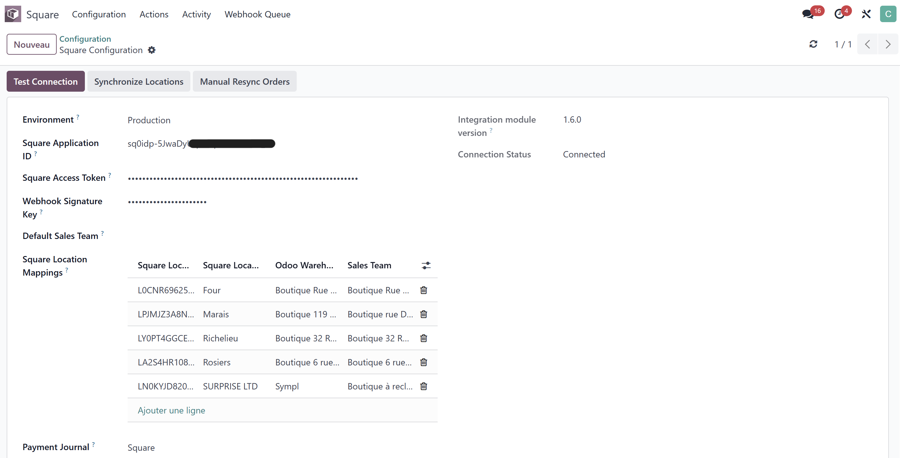
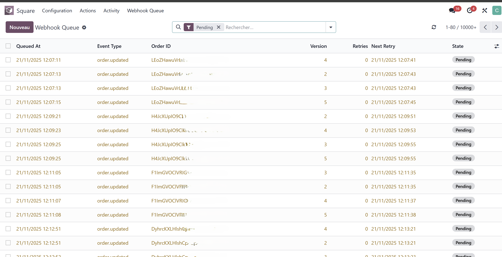
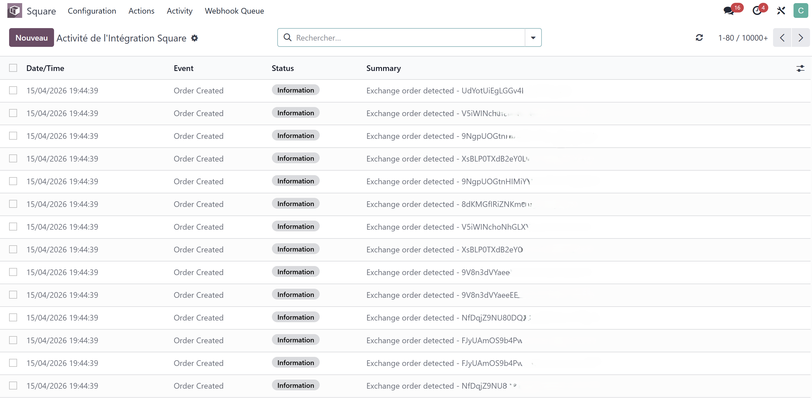
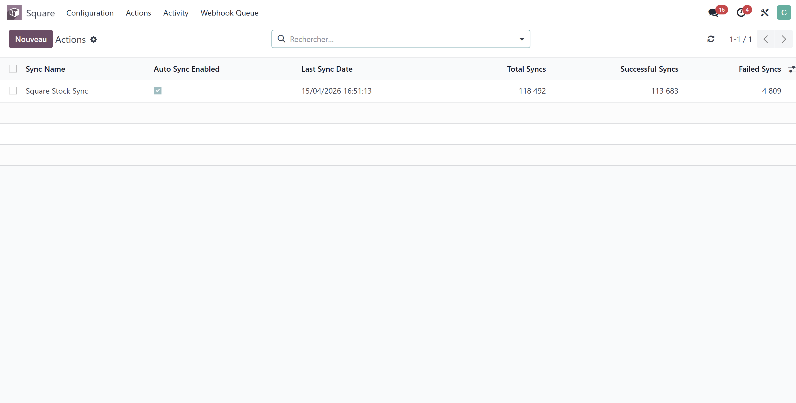
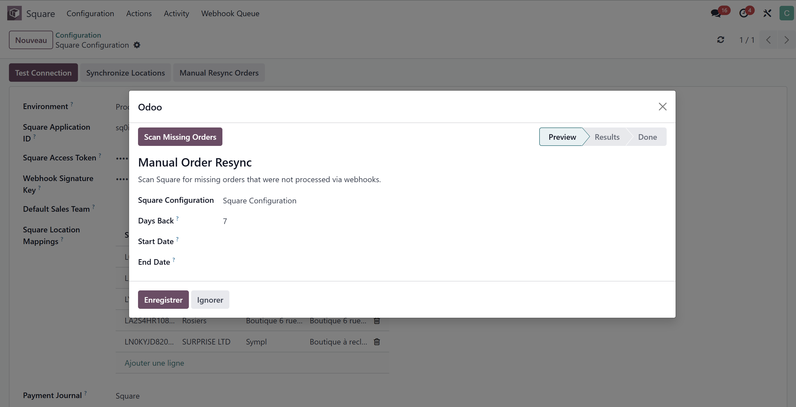

Secure HMAC-SHA256 endpoint receives every Square event:
order.created, order.updated,
refund.created, refund.updated.
Orders, exchanges and refunds appear in Odoo within seconds.
New Square orders are matched to existing Odoo contacts by email, then phone, then name. If no match is found, a new contact is created automatically. No duplicates, no manual cleanup.
Full refunds generate credit notes and stock returns. Equivalent exchanges update lines and trigger simultaneous stock moves. Price-difference exchanges create the appropriate invoice or credit note based on the price delta.
Odoo stock moves push updates to Square through the Square Inventory API. Loop prevention excludes Square-originated moves to avoid conflicts. Scoped to a configurable shop warehouse.
Every webhook, every API call, every refund and every stock adjustment is recorded in a centralized Integration Log. Chatter messages are also added to the source sales order, so the full history is one click away from the order itself.
https://your-odoo-domain/square/webhook.order.created, order.updated, refund.created, refund.updated.Configure API credentials, signing key, and the shop warehouse used for inventory sync.

Inspect, retry, and replay incoming Square events with full payload visibility.

Centralized log of every API call, signature check, order processing step, and stock adjustment.

Monitor bidirectional inventory sync between Odoo and Square in real time.

Wizard to replay a specific order, refund, or stock state on demand.

requestsorder.created → new sales orderorder.updated → line changes, exchangesrefund.created → credit note and stock returnrefund.updated → refund state changesThis module communicates only with the Square API endpoints configured by the administrator. No data is sent to third parties. All customer data remains in your Odoo database. Webhook signatures are verified using HMAC-SHA256 against the signing key you provide.
Released under the GNU Affero General Public License v3.0 (AGPL-3). The source code is available on GitHub.
Questions, bug reports, and feature requests: support@davai.co.